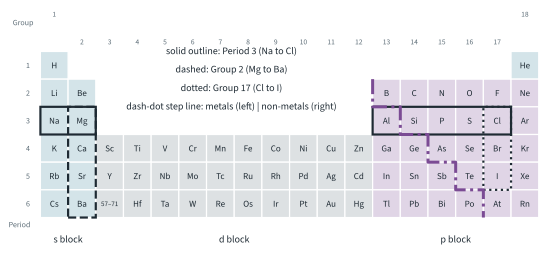
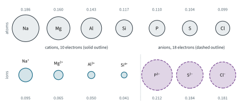
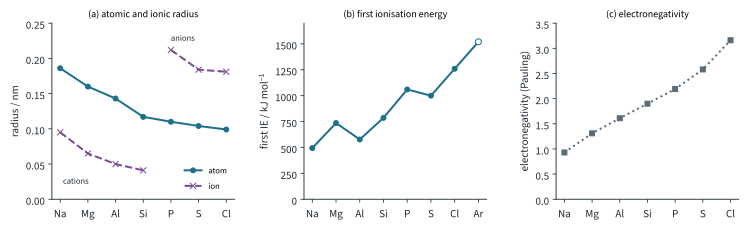
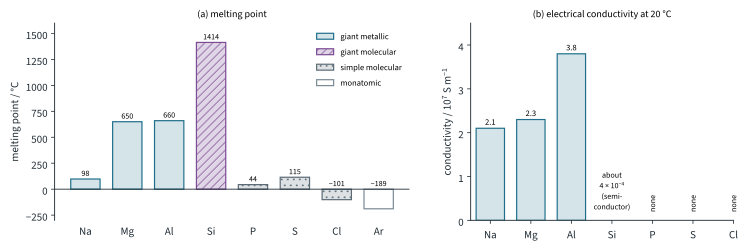
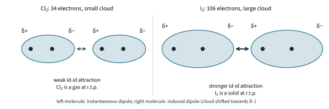

The Periodic Table 1
Topic 5 · The Periodic Table Part 1
On this page
The Periodic Table is not just a list of elements in order of proton number. It is a map: where an element sits tells you how many outer electrons it has, how tightly it holds them, and therefore how it behaves. In this topic we look closely at three slices of the map: Period 3 (sodium to chlorine), Group 2 (magnesium to barium) and Group 17 (chlorine to iodine). Get the pattern in these three and you can predict the rest.

Key terms
| Term | Meaning |
|---|---|
| Period | A horizontal row of the Periodic Table. The period number is the number of the outermost occupied shell. |
| Group | A vertical column. Elements in the same group have the same number of electrons in their outer shell, in the same type of subshell. |
| s, p and d blocks | The regions of the table where the last electron added goes into an s, p or d subshell (Fig 1). |
| Nuclear charge | The total positive charge of the nucleus, equal to the number of protons. |
| Shielding | The reduction in the attraction of the nucleus for an outer electron caused by repulsion from the electrons in inner shells. |
| Atomic radius | Half the distance between the nuclei of two neighbouring atoms of the element: two atoms joined by a single covalent bond (covalent radius) or neighbouring atoms in a metal lattice (metallic radius). |
| Ionic radius | The radius of an ion in an ionic crystal. |
| First ionisation energy | The energy required to remove one mole of electrons from one mole of gaseous atoms to form one mole of gaseous singly charged positive ions (Topic 1 Part 2). |
| Electronegativity | The ability of an atom in a covalent bond to attract the shared pair of electrons towards itself (Topic 2 Part 1). |
| Volatility | How easily a substance turns into a vapour. A volatile substance has a low boiling point. |
Electronic configurations: the pattern behind the table
Topic 1 Part 2 showed you how to write configurations. Now read them sideways and downwards. Across Period 3, one electron is added to the same outer shell (n = 3) at each step, first into 3s, then into 3p:
| Na | Mg | Al | Si | P | S | Cl | Ar | |
|---|---|---|---|---|---|---|---|---|
| Configuration | [Ne] 3s1 | [Ne] 3s2 | [Ne] 3s2 3p1 | [Ne] 3s2 3p2 | [Ne] 3s2 3p3 | [Ne] 3s2 3p4 | [Ne] 3s2 3p5 | [Ne] 3s2 3p6 |
| Outer electrons | 1 | 2 | 3 | 4 | 5 | 6 | 7 | 8 |
Down a group, the number of outer electrons and the type of outer subshell stay the same, but each step down adds one more shell:
| Group 2 | Configuration | Group 17 | Configuration |
|---|---|---|---|
| Mg | [Ne] 3s2 | Cl | [Ne] 3s2 3p5 |
| Ca | [Ar] 4s2 | Br | [Ar] 3d10 4s2 4p5 |
| Sr | [Kr] 5s2 | I | [Kr] 4d10 5s2 5p5 |
| Ba | [Xe] 6s2 |
Two factors explain almost everything
Every physical trend in Part 1 comes down to one question: how strongly does the nucleus attract the outer electrons? You met the factors in Topic 1 Part 2 when explaining ionisation energy. The syllabus asks you to use them in two standard arguments:
- Across a period: the nuclear charge increases by one at each step, while the electrons are added to the same shell, so the shielding by the inner electrons stays about the same (in Period 3, the inner [Ne] core of 10 electrons). The outer electrons are attracted more and more strongly.1
- Down a group: each element has one more shell of electrons, so the outer electrons are further from the nucleus and more shielded by the extra inner shell. The nuclear charge also increases, but the extra distance and shielding outweigh it, so the outer electrons are attracted less strongly.
Atomic radius
The Data Booklet gives atomic radii in nm. For metals these are metallic radii and for non-metals covalent radii, so they can be compared directly across a period.2
| Period 3 | Na | Mg | Al | Si | P | S | Cl |
|---|---|---|---|---|---|---|---|
| Atomic radius / nm | 0.186 | 0.160 | 0.143 | 0.117 | 0.110 | 0.104 | 0.099 |
Across a period: decreases
From Na to Cl the nuclear charge rises from +11 to +17, but the electrons are all being added to the third shell, with the same [Ne] core shielding them. The outer electrons are pulled in more strongly, so the atoms get smaller across the period. The fall is steep at first and then levels off (Fig 3(a)), because each added electron also adds a little repulsion within the outer shell.
Down a group: increases
| Group 2 | Mg | Ca | Sr | Ba | Group 17 | Cl | Br | I | |
|---|---|---|---|---|---|---|---|---|---|
| Atomic radius / nm | 0.160 | 0.197 | 0.215 | 0.217 | 0.099 | 0.114 | 0.133 |
Each step down adds a shell. The outer electrons are further from the nucleus and more shielded, and this outweighs the greater nuclear charge, so atomic radius increases down a group. Fig 2 shows the Period 3 atoms and their ions drawn to the same scale.

Ionic radius
Two comparisons come up again and again:
- A cation is smaller than its atom. Na (2,8,1) loses its only 3s electron to become Na+ (2,8). The whole outer shell has gone, and the remaining 10 electrons are held by the same 11 protons, so they are pulled in more tightly. Na 0.186 nm → Na+ 0.095 nm.
- An anion is larger than its atom. Cl (2,8,7) gains an electron to become Cl− (2,8,8). The nuclear charge is unchanged, but there is one more electron and more repulsion between the electrons, so the electron cloud expands. Cl 0.099 nm → Cl− 0.181 nm.
Across Period 3: two series, with a jump
| Ion | Na+ | Mg2+ | Al3+ | Si4+ | P3− | S2− | Cl− |
|---|---|---|---|---|---|---|---|
| Ionic radius / nm | 0.095 | 0.065 | 0.050 | 0.041 | 0.212 | 0.184 | 0.181 |
| Electrons | 10 | 10 | 10 | 10 | 18 | 18 | 18 |
| Protons | 11 | 12 | 13 | 14 | 15 | 16 | 17 |
Na+ to Si4+ are isoelectronic: they all have 10 electrons (2,8). As the nuclear charge increases from 11 to 14, the same 10 electrons are pulled in more strongly, so the ions get smaller. P3− to Cl− form a second isoelectronic series, with 18 electrons (2,8,8), and they too get smaller as the nuclear charge rises from 15 to 17.3
Between Si4+ and P3− the radius jumps from 0.041 nm to 0.212 nm. The anions have one more occupied shell (three shells against two), and only a slightly larger nuclear charge to hold eight extra electrons.
Down a group: increases
Mg2+ 0.065, Ca2+ 0.099, Sr2+ 0.113, Ba2+ 0.135 nm; Cl− 0.181, Br− 0.195, I− 0.216 nm. Same reason as for the atoms: each ion has one more shell than the one above it.
Worked example 1 (Further example): an isoelectronic series
Arrange O2−, F−, Na+ and Mg2+ in order of increasing radius, and explain the order.
(To answer this, first notice that they all have 10 electrons, 2,8. So the only thing that differs is the nuclear charge.) Protons: O 8, F 9, Na 11, Mg 12. The more protons, the more strongly the same 10 electrons are attracted, and the smaller the ion:
Mg2+ (0.065) < Na+ (0.095) < F− (0.136) < O2− (0.140 nm)
First ionisation energy
You already know this trend from Topic 1 Part 2 (definition, equation, and the dips explained with electrons in boxes). Here is the summary for the three slices (Data Booklet values, kJ mol−1):
| Period 3 | Na 494 | Mg 736 | Al 577 | Si 786 | P 1060 | S 1000 | Cl 1260 |
|---|---|---|---|---|---|---|---|
| Group 2 | Mg 736 | Ca 590 | Sr 548 | Ba 502 | |||
| Group 17 | Cl 1260 | Br 1140 | I 1010 |
- Across Period 3: increases, because the nuclear charge increases while shielding stays about the same, so the outer electron is held more tightly. There are two dips: Mg → Al (the 3p electron of Al is higher in energy than the 3s electron of Mg, and partly shielded by it) and P → S (in S, one 3p orbital holds a pair, and the repulsion between the paired electrons makes one easier to remove).
- Down Groups 2 and 17: decreases, because the outer electron is further from the nucleus and more shielded, which outweighs the increase in nuclear charge.

Electronegativity
9476 only asks for the trends, explained qualitatively, but numbers help you see them. The values below are Pauling electronegativities from the literature; the Data Booklet does not list electronegativities.4
| Period 3 | Na 0.93 | Mg 1.31 | Al 1.61 | Si 1.90 | P 2.19 | S 2.58 | Cl 3.16 |
|---|---|---|---|---|---|---|---|
| Group 2 | Mg 1.31 | Ca 1.00 | Sr 0.95 | Ba 0.89 | |||
| Group 17 | Cl 3.16 | Br 2.96 | I 2.66 |
- Across a period: increases. The nuclear charge increases, the shielding stays about the same and the atom gets smaller, so the bonding pair of electrons is attracted more strongly.
- Down a group: decreases. The atom is larger and the bonding pair is further from the nucleus and more shielded from it, so it is attracted less strongly, even though the nuclear charge is larger.
Argon has no electronegativity on the Pauling scale because it forms no compounds. Electronegativity becomes the key to Part 2: the difference in electronegativity between two elements decides whether the bonding between them is ionic or covalent.
Melting point and electrical conductivity across Period 3
Melting point and conductivity are not properties of single atoms. They depend on how the atoms are held together in the element, so the explanation is always structure and bonding (Topic 2 Part 3). Across Period 3 the structure changes from giant metallic, to giant molecular, to simple molecular (table and Fig 4):
| Element | Structure | Particles and forces | m.p. / °C | Conducts? |
|---|---|---|---|---|
| Na | giant metallic | Na+ ions in a sea of delocalised electrons (1 per atom) | 98 | yes |
| Mg | giant metallic | Mg2+ ions, 2 delocalised electrons per atom | 650 | yes |
| Al | giant metallic | Al3+ ions, 3 delocalised electrons per atom | 660 | yes, best |
| Si | giant molecular | each Si covalently bonded to four others (diamond structure) | 1414 | semiconductor |
| P | simple molecular | P4 molecules held by id-id attractions | 44 | no |
| S | simple molecular | S8 molecules held by id-id attractions | 115 | no |
| Cl | simple molecular | Cl2 molecules held by id-id attractions | −101 | no |
| Ar | monatomic | Ar atoms held by id-id attractions | −189 | no |
(Melting points are literature values; phosphorus is the white allotrope and sulfur the rhombic one.)

Na, Mg, Al: giant metallic
Melting a metal means loosening the attraction between the cations and the sea of delocalised electrons. From Na to Al, the number of delocalised electrons per atom increases (1, 2, 3), and the cations become smaller and more highly charged (Na+, Mg2+, Al3+), so the metallic bonding becomes stronger and the melting point rises. (Mg and Al are close, 650 and 660 °C; the boiling points show the trend more clearly.5)
The same delocalised electrons carry the current, so all three are good conductors, and Al is the best of the three because it has the most delocalised electrons per atom.
Si: giant molecular
Silicon has the same structure as diamond: every atom is joined to four others by strong covalent bonds in a giant three-dimensional network. To melt it, a very large number of strong covalent bonds must be broken, so silicon has by far the highest melting point in the period.
All four outer electrons of each Si atom are used in bonding, so there is no sea of delocalised electrons. Silicon is a semiconductor: it conducts only slightly, far less than a metal.6
P, S, Cl, Ar: simple molecular (and monatomic)
Phosphorus (P4), sulfur (S8) and chlorine (Cl2) are made of small molecules. Melting them overcomes only the weak id-id attractions between the molecules; the covalent bonds inside the molecules are not broken. So their melting points are low.
The strength of the id-id attractions depends on the size of the electron cloud (the number of electrons in the molecule): S8 has 128 electrons, P4 60, Cl2 34 and an Ar atom only 18. So the order is S8 > P4 > Cl2 > Ar, which is exactly the order of the melting points.
None of these has mobile charged particles (no delocalised electrons, no ions), so they do not conduct electricity.
Volatility of the Group 17 elements
Volatility is how easily a substance turns into a vapour. The halogens show the trend very clearly, because their states change down the group (literature values):
| Halogen | Appearance at r.t.p. | m.p. / °C | b.p. / °C | Electrons per molecule |
|---|---|---|---|---|
| Cl2 | greenish-yellow gas | −101 | −34 | 34 |
| Br2 | red-brown liquid | −7 | 59 | 70 |
| I2 | grey-black shiny solid (purple vapour) | 114 | 184 | 106 |
Volatility decreases down the group: the boiling point rises from −34 °C to 184 °C.
The halogens are simple molecular, and the forces between their molecules are instantaneous dipole-induced dipole (id-id) attractions. Down the group the molecules have more electrons, so their electron clouds are larger and more easily polarised. Bigger instantaneous dipoles form and induce bigger dipoles in neighbouring molecules, so the id-id attractions are stronger and more energy is needed to separate the molecules (Fig 5).7

(Further example. Fluorine, F2, with only 18 electrons, is a pale yellow gas boiling at −188 °C, which fits the trend. Astatine, below iodine, would be expected to be a dark solid with an even higher boiling point: we come back to predictions like this in Part 3.)
Summary
| Property | Across Period 3 (Na → Cl) | Down Group 2 and Group 17 |
|---|---|---|
| Atomic radius | decreases | increases |
| Ionic radius | decreases within each series; jump from Si4+ to P3− | increases |
| First IE | increases, dips at Al and S | decreases |
| Electronegativity | increases | decreases |
| Melting point | rises Na → Al, peaks at Si, low for P, S, Cl | (Group 17: m.p. and b.p. increase, volatility decreases) |
| Electrical conductivity | Na < Mg < Al good; Si semiconductor; P, S, Cl none |
Additional information
- Beyond the syllabus: a rough way to put a number on this is the ‘core charge’, the nuclear charge minus the number of inner electrons. In Period 3 it rises from +1 for Na (11 − 10) to +7 for Cl (17 − 10), while the shielding core stays the same. ↩
- The Data Booklet also lists Ar (0.190 nm), but that is a van der Waals radius: argon forms no bonds, so its radius is measured between non-bonded atoms. It cannot be compared with the bonded radii of the other elements and is left out here. ↩
- Si4+ and P3− do not really exist as free ions in ordinary compounds (silicon and phosphorus compounds are covalent). The Data Booklet gives their radii so that the series can be compared. ↩
- The Pauling scale runs from about 0.7 to 3.98 (fluorine). The values are used here for illustration; 9476 does not require quantitative treatment of electronegativity. ↩
- Boiling points (literature): Na 883 °C, Mg 1090 °C, Al 2519 °C. Boiling separates the atoms completely, so it reflects the full strength of the metallic bonding better than melting does. ↩
- Beyond the syllabus: at room temperature a few electrons have enough energy to break free from the bonds and move, so the conductivity of silicon rises as the temperature rises, the opposite of a metal. This is why silicon is used in computer chips and solar cells. ↩
- Iodine sublimes noticeably when warmed gently in an open container, giving purple vapour, because its vapour pressure is already high below its melting point. ↩